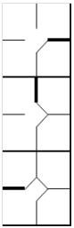

Substitution of runners
If a runner is replaced while he is on base, such a substitution is noted by thickening the border of the square for that base. The example shows, in order, substitution of a runner on first base, on second base and on third.
|  |
We should note that if a player who has replaced a runner on base, he is defined as a "Pinch Runner" and noted in the "Pos" column with the initials "PR". Similarly, we might have a Pinch Hitter, when a player who has come in to bat for another player is replaced. In the next half inning a PH or PR can become a defensive player. Write the fielding position in the right square. Or they might be substituted for new players. In that case write the new name on the next line of the batting order. As we have already noted, a substitution in defense is noted on the opposing team’s sheet with a horizontal line. |